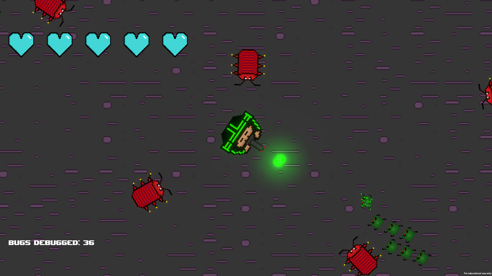

Debugger
Global Game Jam 2023

Debugger is a top down 2D endless shooter which has you shooting a variety of bugs which are coming your way. We used unity to develop this project and Git for the source control. I worked on the enemy spawning, title screen and parts of the player control. I learned more about unity development from this project as well as source control management and git branching and merging.
This Game Features:
- Multiple enemy types
- Progressive difficulty
- Dynamic enemy spawning
- Sprite animations
- Score and health system
- Full menu and how to play section
The game's executable and source code can be found on the Global Game Jam page here!
The github repository can be found here!
Many thanks to Jerry Fraser and Thomas Stebbings for their work on the game as part of our Global Game Jam 2023 team.